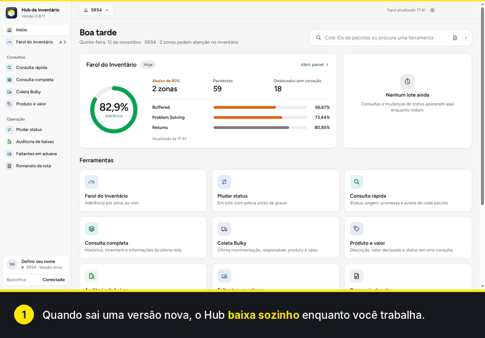

Hub de Inventário
Hub de InventárioTrês jeitos de instalar
O Hub é o mesmo nos três. Comece pelo primeiro e só passe para o seguinte se o computador não deixar.
-
Comece por aqui
Instalador para Windows
Instala em poucos segundos, não pede senha de administrador e deixa o atalho na área de trabalho.
Baixar o instalador -
Se o instalador for bloqueado
Microsoft Store
Para computador da empresa que só aceita aplicativo da Store. Abra o link e clique em Instalar.
Abrir na Store ↗ -
Se nenhum dos dois abrir
Versão Web
Roda dentro do envios, no navegador Edge, com a extensão Tampermonkey. Dá para instalar como aplicativo, com ícone e janela própria.
Ver o passo a passo →
Primeira vez? São quatro passos
Com o instalador para Windows, leva perto de um minuto.
- BaixeClique em “Baixar para Windows” e espere o arquivo terminar.
- Abra o arquivoEle está na pasta Downloads, com o nome HubInventario. Dois cliques.
- Espere abrirO Hub se instala e abre sozinho. O atalho fica na área de trabalho.
- Entre no enviosÉ o mesmo login do envios. O Hub já abre na sua unidade.
Apareceu “O Windows protegeu o computador”?Clique em Mais informações e depois em Executar assim mesmo. Se esse botão não aparecer, o computador bloqueia instaladores: use a Microsoft Store.
Depois, ele se atualiza sozinho
Esta página só é necessária na primeira instalação.
- Saiu versão nova? O Hub baixa em segundo plano e avisa: “A versão … está pronta”.
- Clique em Atualizar agora. Ele reabre em poucos segundos, já atualizado.
- Não viu o aviso? Engrenagem, no alto à direita, e Procurar atualizações.
- Parado por 10 minutos, o Hub se atualiza sem ninguém clicar.

Versões
A mais recente fica em cima. Clique numa linha para ver o que mudou.